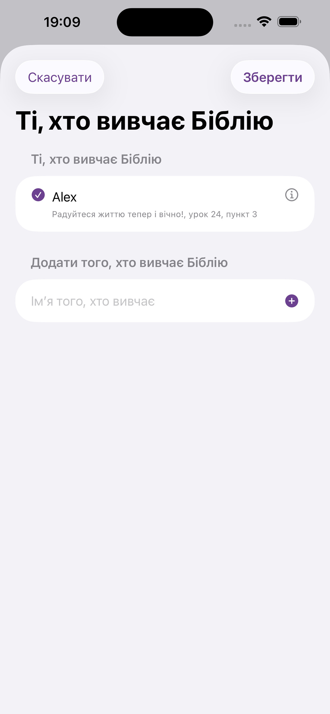
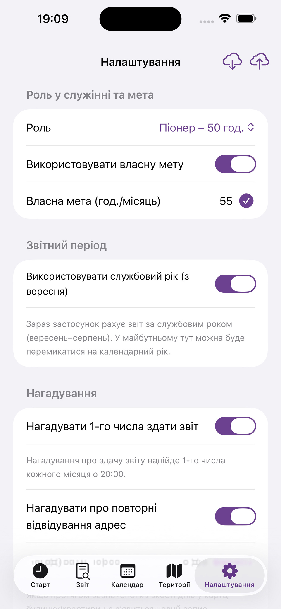

Доступно для iPhone та iPad • Версія 1.8 • 35+ мов
Зручний помічник для планування та обліку служіння
JW Ministry — спеціалізований додаток для проповідування Свідків Єгови на iPhone та iPad: точний таймер із Live Activities, облік біблійних вивчень, звіт за місяць і службовий рік, розклад загальних і допоміжних піонерів та картки особистих дільниць.


35+
Мов інтерфейсу
100%
Локально і приватно
iPhone і iPad
Нативний дизайн iOS
Без реклами
Повністю безкоштовно
QR App Store
Наведіть камеру для завантаження з App Store
Усі екрани додатка JW Ministry
Реальні скріншоти інтерфейсу українською мовою — від живого таймера і списку зацікавлених до календаря піонера, дільниць і темної теми OLED.





Everything You Need for Organized Ministry
Built specifically around the real workflow of publishers, auxiliary pioneers, regular pioneers, and special pioneers.
Time Tracking • Live Activities
Smart Timer, Widgets & Live Activities
Start your ministry timer from the app, Home Screen widget, or Lock Screen. Your active timer stays visible on the Dynamic Island and Lock Screen even when your iPhone is locked.
Bible Studies • Lesson Progress
Bible Studies & Publication Progress
Link Bible studies directly to your daily report entries. Track each student's name and current lesson in 'Enjoy Life Forever!' or any other study aid.
Service Roles • 15 / 30 / 50 / 100 h
Service Roles & Personal Hour Targets
Supports Publisher, Auxiliary Pioneer (15 or 30 hours), Regular Pioneer (50 hours), Special Pioneer / Missionary (90 / 100 hours), plus a custom 'Personal target' override (e.g., 55 hours/month).
Service Year • Plan vs. Actual
Service Year (Sept–Aug) & Calendar
Plan ministry meetings, recurring schedules, and Family Worship in the Calendar. Compare planned vs. actual hours, convert planned sessions into report entries with a swipe, and track your annual pioneer goal.
Territory Log • Search & Alerts
Territories, Apartments & Visit Reminders
Create cards for territories, multi-story apartment buildings, and private houses. Attach map photos, color-code cards, search by address or resident name, and receive automatic reminders to make return visits.
On-Device Privacy • iCloud Backup
100% On-Device Privacy & Full Backups
No registration, no accounts, no external servers, and zero analytics. All records and territory photos stay locally on your iPhone/iPad, with instant backup export & restore to iCloud Drive or Files.
What's New in Version 1.8
- Automatic monthly planned-hours total in the Calendar with a dual Planned vs. Actual progress bar.
- 1-swipe conversion of any scheduled Calendar ministry session directly into a monthly Report entry.
- Instant search by street address or resident name across Territories, plus 10 color themes for territory cards.
- Upcoming Service Year (2026–2027) support in the Report tab with a sleek annual balance summary.
- Full optimization for the latest iOS & iPadOS releases and enhanced on-device backup protection.
Why Publishers & Pioneers Switch to JW Ministry
Side-by-side comparison for field service tracking, pioneer scheduling, and territory management.
| Feature | Paper Notebook | Legacy Apps | JW Ministry 1.8 |
|---|---|---|---|
| Live Ministry Timer on Lock Screen & Dynamic Island | No | No | Yes (Live Activities) |
| Pioneer Goal Calculator (15, 30, 50, 100h) & 600h Service Year | Manual calculation | Partial | Automatic + Custom Goal |
| Planned vs. Actual Calendar & Swipe-to-Report Conversion | No | No | Built-in 1-Swipe Workflow |
| Apartment Building Generator + Territory Photos & 10 Color Tags | Paper slips | Text only | Full Visual Cards + Search |
| Return Visit Reminders & 1st-of-the-Month Report Notification | No | Basic | Smart iOS Notifications |
| 100% On-Device Privacy & Full iCloud Drive Backup with Photos | Easy to lose | Often breaks on new iOS | Offline & Instant Restore |
| Native Support for Latest iOS, iPad, OLED Dark Mode & 35+ Languages | — | Discontinued | Modern SwiftUI Architecture |
Built for Jehovah's Witnesses Field Service & Pioneer Ministry
How JW Ministry helps publishers, auxiliary pioneers, regular pioneers, and special pioneers organize their service year.
Regular & Special Pioneers (50, 90 & 100 Hours / 600-Hour Service Year)
Serving as a regular pioneer requires keeping track of both your 50-hour monthly target and your 600-hour September–August service year goal. JW Ministry automatically calculates your completed ministry hours, remaining monthly balance, and full service year progress. Set a custom personal monthly goal (e.g., 55 hours), schedule ministry days in the Calendar, and compare your planned hours against your actual reported time.
- Automatic 50 h monthly & 600 h September–August service year tracking
- Custom monthly hour target override (e.g., 55 h/month)
- Dual progress bar comparing scheduled vs. reported hours
Auxiliary Pioneers (15 & 30 Hours) and Congregation Publishers
Joining a special campaign, circuit overseer's visit, or Memorial season as an auxiliary pioneer? Switch your role to Auxiliary Pioneer (15 h or 30 h) in seconds. Congregation publishers can log daily ministry sessions, track Bible studies, and enable an automatic notification on the 1st of every month at 20:00 so you never forget to submit your field service report.
- One-tap switch to 15 h or 30 h Auxiliary Pioneer goals
- Instant monthly report formatting and sharing on the 1st
- Gentle reminder notification on the 1st of each month at 20:00
House-to-House Territories, Apartment Generator & Return Visits
Replace paper slips with organized digital territory cards. Attach photos of territory maps, color-code cards with 10 stylish colors, and generate entire multi-story apartment buildings by entrances and floors in one tap. Record 'First visit', 'Not at home', or 'Refusal' statuses, search across all territories by street address or resident name, and receive automatic reminders when it is time to make a return visit.
- Multi-story apartment generator by entrances and floors
- Territory map photos, 10 color themes & instant resident/address search
- Automated return visit reminders after your chosen number of days
Bible Student Progress & Modern iOS Replacement for Legacy Apps
Maintain a detailed roster of your Bible students along with their current study publication (such as 'Enjoy Life Forever!'), lesson number, and section. Attach students directly to your timer session so your monthly study count is always accurate. Built natively with SwiftUI for the latest iPhone and iPad models, JW Ministry is the ideal modern alternative to discontinued apps like ServicePlanner or MyTime.
- Track exact lessons in 'Enjoy Life Forever!' for every student
- Built natively for iOS & iPadOS with Dynamic Island & OLED Dark Mode
- Complete modern replacement for legacy ServicePlanner & MyTime apps
Loved by Publishers & Pioneers Worldwide
Real feedback from brothers and sisters using JW Ministry in their daily field service.
★★★★★
“Having the monthly planned hours automatically totaled in the Calendar alongside my actual reported hours is a game changer for keeping my 50-hour schedule on track.”
★★★★★
“The Lock Screen Live Activity timer and 1-swipe conversion from Calendar plans to Report entries make tracking 15 and 30 hours effortless. Clean, fast, and 100% private.”
★★★★★
“The apartment building generator and instant search across territory notes replaced all my paper slips. Return visit reminders help me never miss a follow-up.”
Fully Localized into 35+ Languages
The app interface, widgets, and notifications automatically match your device language:
English
Русский
Español
Deutsch
Português (Brasil)
Français
Українська
Polski
Italiano
Nederlands
Čeština
Slovenčina
Magyar
Română
Български
Ελληνικά
Türkçe
한국어
日本語
繁體中文
ไทย
Bahasa Indonesia
Filipino
हिन्दी
ქართული
Lietuvių
Hrvatski
Srpski
Shqip
Dansk
Svenska
Norsk Bokmål
Suomi
Afrikaans
Ikinyarwanda
Independent & Ad-Free Project
Support the Development of JW Ministry
JW Ministry is created and maintained by an independent developer for personal use. There are no ads, no paid tiers, and no subscriptions. If the app makes your ministry easier, you can support future iOS updates and Apple Developer license renewal:
Support by Card (Worldwide)
Quick one-time tip or monthly support from any country via Boosty or Patreon:
Direct Crypto Transfer (0% Platform Fee)
Instant transfer directly to the developer's wallet:
USDT (TRC-20 / TRON Network only):

TQQxYhThQGngj887Lvq9TnKtyyYMcUDFNw
TON / USDT (TON Network):

UQBNBroTUyMG0YqgiHGXwVKO_rKe5d2y7gXqvICREjBwuKYk
For the TQQx... address, send assets via TRON (TRC-20) network only.
Frequently Asked Questions
How does JW Ministry complement JW Library for Jehovah's Witnesses?
While JW Library is used for reading the Bible, publications, and congregation meetings, JW Ministry is purpose-built for tracking your personal field ministry: logging field service report hours, planning your regular or auxiliary pioneer schedule (15, 30, 50, or 100 hours), managing personal territory records, and tracking Bible students.
Where are my ministry records and territory notes stored?
Exclusively on your device (iPhone or iPad). The app has no external database or cloud server, ensuring complete confidentiality of your personal notes and addresses.
How do I transfer my data to a new iPhone or iPad?
Open the Settings tab and tap the Cloud Upload icon in the top-right corner to export a full backup file (including territory photos) to iCloud Drive or AirDrop. On your new device, tap the Cloud Download icon to restore everything in one tap.
How do automatic return visit reminders work?
In Settings → Notifications, enable 'Remind about return visits to addresses' and set the interval (for example, 3 days). If you haven't logged a follow-up visit to an address within that period, the app will gently remind you.
Does the app support the September–August Service Year?
Yes! Both the Report tab and the Calendar summary calculate monthly and annual hours across the official September–August service year, including remaining hours toward your annual pioneer goal.
Is JW Ministry a good replacement for ServicePlanner or MyTime on iPhone?
Yes! JW Ministry is actively maintained for the latest iOS and iPadOS releases, featuring Live Activities on the Lock Screen and Dynamic Island, interactive Home Screen widgets, an apartment building generator, Planned vs. Actual calendar tracking, and 1-tap iCloud Drive backups.
Does the app work completely offline during door-to-door ministry?
Absolutely. All timers, territory maps, apartment records, and Bible student notes work 100% offline without requiring mobile data or Wi-Fi.
Can I convert a planned ministry event in the Calendar into a Report entry?
Yes. Simply swipe on any planned ministry session in the Calendar and tap 'To Report' — the duration is automatically logged in your monthly report and deducted from your remaining planned hours.